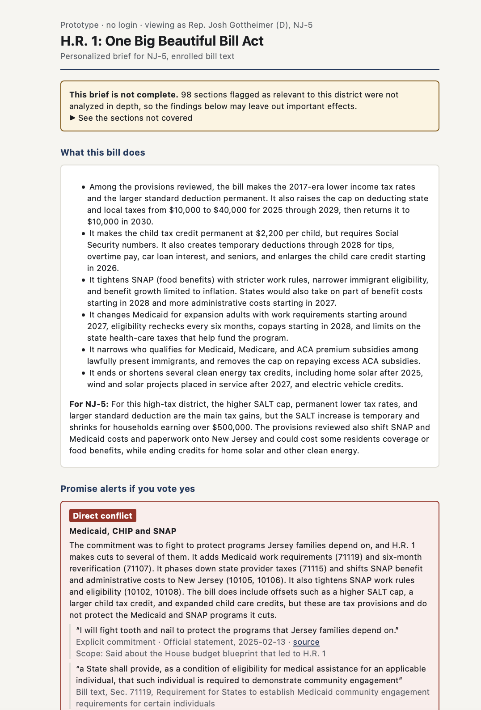

Product Showcase (Prototype / Live App / 2-Min Video)
Current Status: Build 1 local prototype, using H.R. 1 (119th Congress) and public data for NJ-5. An independent student project, not affiliated with or endorsed by Rep. Gottheimer or his office.
Demo: Screenshot of the local prototype below. A live cloud app comes in Build 5.

Build 1 local prototype. The warning at the top is real: 98 of the 158 sections flagged as relevant were not analyzed in depth in this run.
Living PRD (Product Requirements Document)
Updated every week as we test with real users and learn what works.
1. Target User & The Job to Be Done
Who is this for? Members of the U.S. House and their legislative staff. The prototype is built around one real district, NJ-5. No congressional office has tested it yet.
The painful "Before" workflow: Bills can run to thousands of pages and often reach the floor with little time to read them. Members rely on staff memos and party summaries, and someone has to work out by hand how each provision lands in the district and whether it matches what the member has said publicly.
The "After" workflow with this product: The member opens one brief that explains the bill without jargon, ranks the provisions most helpful and most harmful to their district with evidence, and flags any conflict with a public commitment, quoting both the commitment and the bill text.
2. Scope & Explicit Non-Goals
- In Scope (Core Workflow): Take one House bill and produce a personalized, cited brief for one member's district and public commitments.
- Out of Scope #1: Telling members how to vote. The product shows who is affected and the evidence.
- Out of Scope #2: The Senate. House members only.
- Out of Scope #3: Exhaustive monitoring of all social media and TV. Platform access is restricted, so sources are added selectively and every commitment must have a citation.
3. How It Works Under the Hood & Riskiest Assumption (Week 2+)
Riskiest Assumption: That promise alerts can be accurate enough to trust. A false alarm costs the member's confidence, and a missed conflict is worse, so the brief never claims there are no conflicts, only that none were found among the commitments reviewed.
Simple Architecture: Bill text, district data and cited commitments → a cheap model screens every section → a stronger model analyzes flagged sections → code verifies every quote and citation → plain-English brief
4. Unit Economics & Analytics Snapshot (Updated Weekly)
Cumulative Build Spend
$3.17 OpenRouter, excluding coding agent
Est. Cost Per User Run
$1.12 for one H.R. 1 brief
User Evidence (Analytics from Build 2)
[Not yet measured]
Sponsor Call (Week 6)
TBD
Weekly Build Log
Build on at least two separate days each week outside class, including the November 3 break. Push commits and log actual progress, failures, PRD changes, costs, and hours here. All build deadlines are noon, New York time.
Build 1 · Intent.md & Throwaway Prototype (Due Nov 9)
- What shipped: A local prototype for H.R. 1 and NJ-5: the bill split into 309 sections, ACS 2024 district data, ten House elections from 2006 to 2024, the member's two roll call votes, eight sourced commitments, a screening and analysis pipeline, a generated brief with 60 citation-checked findings, and automated tests of the citation and alert rules.
- Things learned with AI: I learned the difference between my code on GitHub, the public Product Page that GitHub Pages builds from it, and the app running only on my own computer at localhost. I learned that API keys go in a local
.env file that Git ignores, and never in the chat or the code. My first real run taught me that a confident-looking AI output can hide a big gap: it hit a rate limit and left out Medicaid, the most important issue for this member, and the summary didn't mention it. So I had the AI's quotes checked by plain code, and the brief now states what it didn't cover. I also learned to set hard spending limits before running paid models. I really enjoyed the fun interface of the Terminus game - I am a Sci Fi person so this was an enjoyable way for me to get through what is an otherwise difficult subject for me to learn (coding in general).
- What broke / changed in PRD: The first run hit a rate limit on new accounts and left out Medicaid entirely, so requests are now paced and the brief states what it did not cover. Alerts repeated the same promises across sections, so each commitment is now judged once against the whole bill, and code limits "direct conflict" to explicit pledges. Still open: all 8 commitments triggered an alert, which is too sensitive, and 98 flagged sections were not analyzed in depth.
- Cost & time this week: $3.17 OpenRouter, excluding coding agent · 3 hours
Build 2 · Smallest Local Version & PostHog (Due Nov 16)
- What shipped: [Local working slice, PostHog verified on this page and the local app, PRD v2, and local setup in AGENTS.md]
- What broke / changed in PRD: [Fill in]
- Cost & time this week: $[0.00] · [0] hours
Build 3 · Build.exe: The Core Workflow (Due Nov 23)
- What shipped: [End-to-end workflow working with real inputs + PostHog funnel events]
- What broke / changed in PRD: [Fill in]
- Cost & time this week: $[0.00] · [0] hours
Build 4 · Test.py: Choose Track A or Track B (Due Nov 30)
- Chosen track: [A: 10-case domain eval and one outside target-user review; OR B: 3–5 outside users and replay findings]
- Results and improvements: [Before/after evidence; for Track B, fixes to the top three friction points]
- PRD v4 changes: [What the evidence changed]
- Cost & time this week: $[0.00] · [0] hours
Build 5 · Ship.installer: Launch Ops, Rollback Check & 2-Min Video (Due Dec 7)
- Launch Ops & Safety: [Verified no exposed keys, set spend cap, tested 2-minute rollback]
- 2-Minute Video & Final Polish: [Link/embed above]
- Cost & time this week: $[0.00] · [0] hours